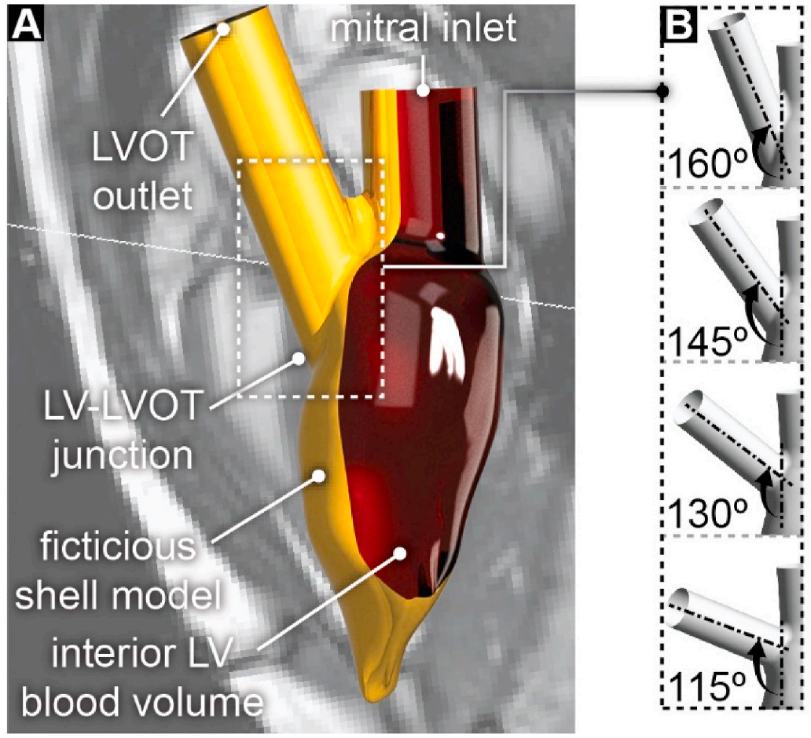
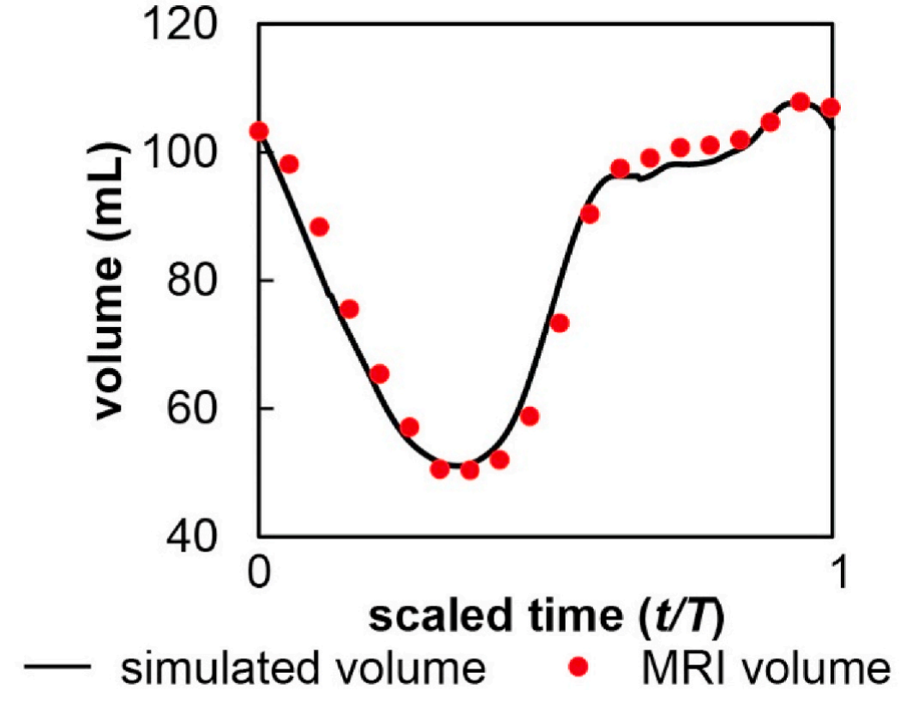
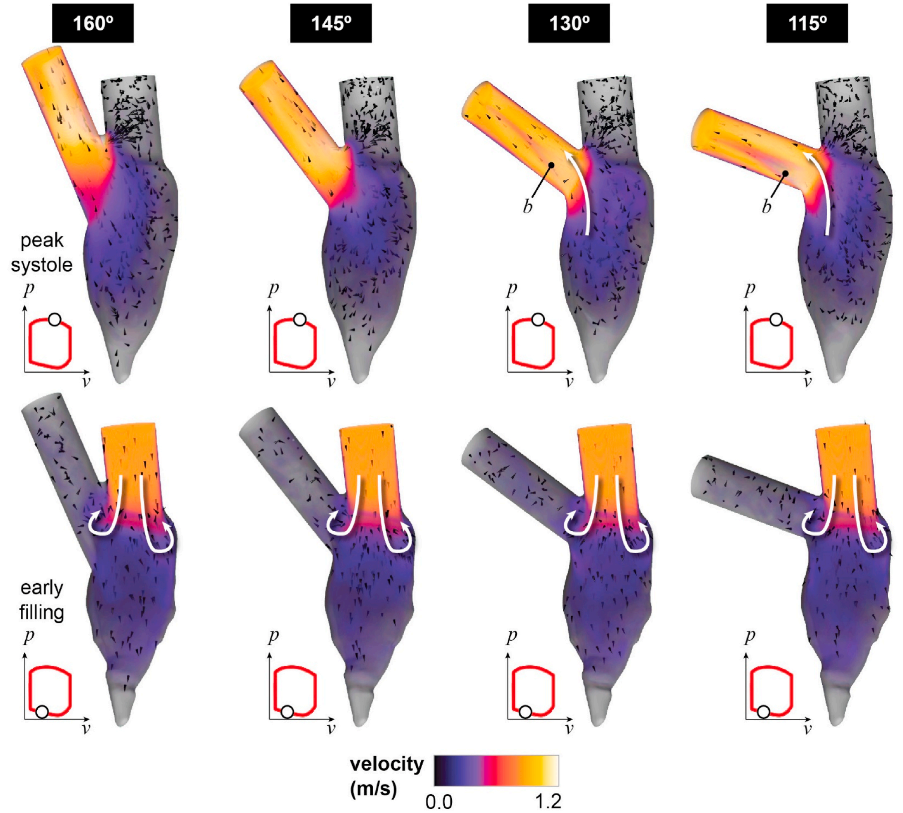
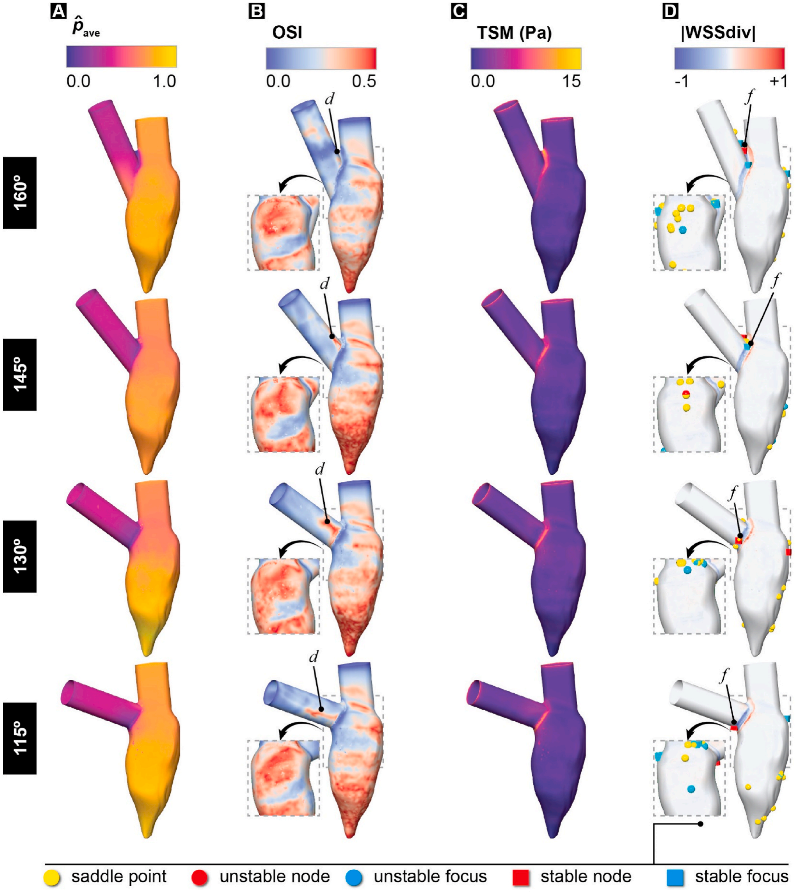
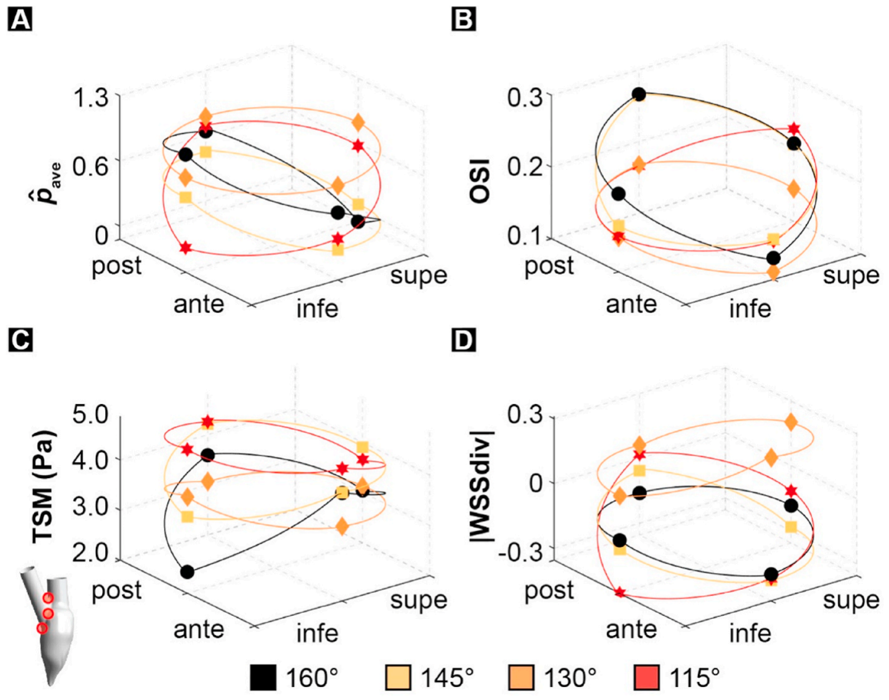

Significance of aortoseptal angle anomalies to left ventricular hemodynamics and subaortic stenosis: A numerical study
a Department of Mechanical Engineering, Kennesaw State University, 840 Polytechnic Lane, Marietta, GA, 30060, USA
b Division of Pediatric Surgery, Texas Children’s Hospital, Department of Surgery, Baylor College of Medicine, USA
c Department of Bioengineering, Rice University, USA
Article Info
Keywords:
- Discrete subaortic stenosis
- Aortoseptal angle
- Left ventricular outflow tract
- Wall shear stress
- Fluid-structure interaction modeling
- Hemodynamics
Abstract
Purpose: Discrete subaortic stenosis (DSS) is an obstructive cardiac disease caused by a membranous lesion in the left ventricular (LV) outflow tract (LVOT). Although its etiology is unknown, the higher prevalence of DSS in LVOT anatomies featuring a steep aortoseptal angle (AoSA) suggests a potential role for hemodynamics. Therefore, the objective of this study was to quantify the impact of AoSA steepening on the LV three-dimensional (3D) hemodynamic stress environment.
Methods: A 3D LV model reconstructed from cardiac cine-magnetic resonance imaging was connected to four LVOT geometrical variations spanning the clinical AoSA range (115°–160°). LV hemodynamic stresses were characterized in terms of cycle-averaged pressure, temporal shear magnitude (TSM), and oscillatory shear index. The wall shear stress (WSS) topological skeleton was further analyzed by computing the scaled divergence of the WSS vector field.
Results: AoSA steepening caused an increasingly perturbed subaortic flow marked by LVOT flow skewness and complex 3D secondary flow patterns. These disturbances generated WSS overloads (>45% increase in TSM vs. 160° model) on the inferior LVOT wall, and increased WSS contraction (>66% decrease in WSS divergence vs. 160° model) in regions prone to DSS membrane formation.
Conclusions: AoSA steepening generated substantial hemodynamic stress abnormalities in LVOT regions prone to DSS formation. Further studies are needed to assess the possible impact of such mechanical abnormalities on the tissue and cellular responses.
Abbreviations: AoSA, aortoseptal angle; CFD, computational fluid dynamics; DSS, discrete subaortic stenosis; FSI, fluid-structure interaction; LV, left ventricle; LVOT, left ventricular outflow tract; OSI, oscillatory shear index; TSM, temporal shear magnitude; WSS, wall shear stress.
* Corresponding author.
E-mail addresses: jshar@kennesaw.edu (J.A. Shar), sgkeswan@texaschildrens.org (S.G. Keswani), grande@rice.edu (K.J. Grande-Allen), psucosky@kennesaw.edu (P. Sucosky).
1. Introduction
Discrete subaortic stenosis (DSS) is an obstruction to systolic blood flow in the left ventricular (LV) outflow tract (LVOT) and is characterized by the formation of a fibromuscular ring of tissue [1,2]. DSS occurs in 6% of children with congenital heart defects and accounts for 8–30% of total LVOT obstructions in the pediatric population [1,3]. Unless the obstruction is surgically removed, most patients develop a spectrum of secondary pathologies including aortic regurgitation, LV hypertrophy and dysfunction, cardiac arrhythmias, endocarditis, systolic anterior motion, and death [3–7]. Surgical resection of the membrane is currently the only therapeutic option but is associated with major complications such as aortic regurgitation, mitral valve damage, and iatrogenic heart block [5,8]. Even upon successful removal, the lesion recurs in up to 34% of patients [7], necessitating intensive follow-up and additional interventions.
The challenges posed by DSS and its complications justify the need to elucidate the underlying mechanisms of its pathogenesis. Although this knowledge remains limited, the frequent occurrence of DSS in LVs with a steep aortoseptal angle (AoSA, angle between the long axis of the aorta and the septal wall) has provided more support to a hemodynamic etiology [1,2,4,8–10]. The validation of this hypothetical pathway first requires the demonstration of hemodynamic alterations in LVOT anatomies vulnerable to DSS. In vivo and in vitro modalities have been employed to characterize global LV function in normal, pre-, and post-resection patients [5–7,11–14] and to resolve the local interventricular flow field [15,16], respectively. Image-based computational fluid dynamics (CFD) models, which use medical images to reconstruct LV anatomies and deformation, have also been used to capture the native interventricular filling and systolic ejection hemodynamics [17–21], as well as the instantaneous [17,22–24] and time-averaged LV wall shear stress (WSS) environments [25,26]. However, few studies have explored the impact of DSS-prone LVOT anatomies on LV hemodynamics. One CFD study implementing idealized LV geometries and deformations suggested an increase in WSS magnitude along the septal wall with decreasing AoSA [9]. More recently, a two-dimensional (2D) flow model published by our group explored the impact of AoSA abnormalities and DSS on LV hemodynamics in a patient-specific LV geometry with realistic wall motion [27]. The study revealed that a 20° reduction in AoSA resulted in substantial WSS magnitude and temporal gradient overloads on the septal wall (23% and 69% increase in temporal shear magnitude and temporal shear gradient, respectively). Those results not only indicated a potential causality between AoSA steepening and WSS overloads in septal wall regions prone to DSS lesion formation, but also demonstrated the existence of stenotic, disturbed, and rotational valvular hemodynamics in DSS LVOTs. Our group also elucidated the impact of AoSA steepening on hemodynamic abnormalities by utilizing fluid-structure interaction (FSI) modeling in a unified 2D LV-aortic valve flow model over a limited range of AoSAs (e.g., 110°–130°) in both an unobstructed and DSS LVOT anatomies [28]. The results indicated that both AoSA steepening and DSS generated stenotic hemodynamics and complex vorticity dynamics downstream the LVOT, which caused alterations in leaflet WSS and kinematics.
Although those computational efforts have provided new insights into LV hemodynamics and function in DSS-prone and DSS LVs, characterizing the complex LV fluid dynamics and stress environment requires the development of more sophisticated models capturing the three-dimensionality (3D) of the flow. In addition, the anatomic variability observed between DSS patients justifies the need for investigating a wider range of AoSAs. Therefore, the objective of the present study was to investigate computationally the modulation of the 3D LV WSS environment over the full clinical range of AoSAs.
2. Materials and methods
2.1. LV reconstruction

The 3D LV model consisted of two domains: 1) a fictitious shell model representing the LVOT and LV walls, and 2) a fluid domain representing the blood volume contained within (Fig. 1A). The anatomy was acquired from cardiac cine-magnetic resonance imaging (MRI) of a healthy 21-year old female volunteer using a 3T scanner (GE Medical Systems MR 750w). Images were captured in the short-axis, 2-, 3-, and 4-chamber views, with an in-plane resolution of 256 mm and a slice thickness of 8 mm. Using a previously published methodology [27,28], the mid-systolic interior blood volume was semi-automatically segmented using Segment v3.0 R7568 (Medviso AB, Lund, Sweden [29]) and finalized in SolidWorks (SolidWorks, Dassault Systèmes, Vélizy-Villacoublay, France) to produce a spatially-smooth geometry (further details provided in Appendix – section A.1). To assess the potential impact of AoSA abnormalities on the LV hemodynamic stress environment, four LV models were constructed by progressively steepening the AoSA in 15° increments to represent the full range (115°–160°) reported in the literature [2–4,7,10] (Fig. 1B). To effectively isolate the impact of the AoSA on LV hemodynamics, all models shared the same LV geometry, wall deformation patterns and flow boundary conditions. Cardiac deformation was prescribed using a previously published methodology [27,28] in which the native deformation was mapped to the fictitious shell model via a series of displacement nodes (see Appendix – section A.2 for further details).
2.2. LV flow modeling
LV flow was computed via a one-way FSI strategy using the commercial software ANSYS 2019 R3 (ANSYS Inc., Canonsburg, PA, USA). The flow equations were computed via an arbitrary Lagrangian Eulerian (ALE) strategy [30], in which a dynamic mesh was fixed to the deforming fluid boundary and smoothed/remeshed at each time step to maintain an acceptable grid quality. The governing flow equations consisted of the continuity and Navier-Stokes equations in their ALE forms:
and
respectively, where V is the fluid velocity vector, W is the moving mesh velocity vector, τ is the fluid stress tensor, and f is the body force per unit volume. Blood was approximated as a laminar, incompressible, Newtonian fluid (density, ρ = 1050 kg/m3; viscosity, μ = 0.0035 kg/m.s) [27,28]. The flow boundary conditions at the mitral inlet and LVOT outlet consisted of transient and spatially uniform velocity profiles derived from the temporal variations in LV volume resulting from the prescribed wall displacements. Aortic and mitral valve closure was simulated by enforcing zero flow velocity during diastole and systole, respectively.
2.3. Spatial discretization characteristics
The fluid domain was discretized using a combination of unstructured tetrahedral and hexahedral cells. Following a mesh sensitivity analysis (see Appendix – section A.3), each model was meshed with a fluid grid size of ~1.2 million cells, including inflation layers along the ventricular wall (n = 10 layers; total thickness = 2 mm) to effectively capture boundary layer characteristics.
2.4. Hemodynamic analysis
2.4.1. Global flow characterization
Global hemodynamics were assessed in terms of velocity magnitude captured over the entire fluid domain. To better represent the flow structure, massless particles were virtually injected through the mitral orifice during the diastolic phase and tracked using the built-in Eulerian-Lagrangian approach.
2.4.2. Wall shear stress characterization
To investigate the possible impact of AoSA abnormalities on the LV endocardium, time-averaged pressure and WSS characteristics were captured. Although these quantities can be extracted from computational nodes on the fluid domain boundary, nodal locations were not systematically preserved between two consecutive time steps due to the dynamic remeshing and smoothing implemented as part of the FSI methodology. To allow for the calculation of time-averaged WSS metrics, which requires one-to-one node connectivity between subsequent time steps, an in-house MATLAB algorithm was developed to automatically track computational node positions (see Appendix – section A.4; freely available at https://github.com/RaiderDoc/MATLAB_tracking_algorithm.git). Pressure characteristics were quantified by assessing the cycle-averaged static pressure acting on the LV luminal surface, pave, expressed as:
where T is the total cardiac cycle time, and p is the instantaneous static pressure. To allow for a meaningful comparison across all models, a normalized value (p̂ave) was calculated using the global maximum and minimum values across all models:
WSS characteristics consisted of the oscillatory shear index (OSI) and the temporal shear magnitude (TSM), defined as:
and
respectively, where τ is the instantaneous local WSS vector and T is the cardiac period. The OSI quantifies the oscillatory nature of the WSS signal (OSI = 0: purely pulsatile/unidirectional; OSI = 0.5: purely oscillatory/bidirectional), while the TSM characterizes the time-averaged magnitude of the WSS over one cardiac cycle.
Due to its ability to quantify the complex and highly dynamic features of the WSS field [31,32], the WSS topological skeleton was also quantified. Briefly, analyzing the WSS topological skeleton consists of identifying the fixed points within the WSS vector field (i.e., points where the field itself vanishes) and the stable/unstable manifolds that connect them (i.e., regions of WSS contraction/expansion, respectively). This was achieved using a recently developed Eulerian identification method [31], in which fixed points were first identified using the Poincaré index [33]. Possible values of the Poincaré index are 0 (fixed point free region), −1 (saddle point), and +1 (possible node/focus). Once the locations of the fixed points were determined, they were further classified as stable/unstable node/focus by analyzing the three eigenvalues of the Jacobian matrix of the LV WSS vector field [31,32]. Finally, WSS manifolds occupying the LV luminal surface were identified by calculating the divergence of the WSS vector field:
Positive and negative values indicate locations of WSS stretching and compression on the endocardium, respectively [34]. To allow for a meaningful comparison across all models, a normalized WSS divergence value (|WSSdiv|) was generated by scaling the local WSS divergence by the maximum value predicted among all models:
3. Results
Each model was run for four cardiac cycles to achieve temporal convergence. The data presented in this section were captured during the fourth cycle.
3.1. Global flow parameters and velocity fields

| time point | 160° | 145° | 130° | 115° |
|---|---|---|---|---|
| peak systole | 1.41 | 1.28 | 1.24 | 1.31 |
| e-wave | 0.96 | 0.96 | 0.96 | 0.95 |

The transient LV blood volumes over one cardiac cycle were extracted from the baseline 160° model and compared qualitatively with the patient-specific cine-MRI dataset (Fig. 2). The model predicted an end-diastolic and end-systolic volume of 107.7 mL and 51.1 mL, respectively. The predicted stroke volume and ejection fraction were 56.6 mL and 52.6%, respectively. These calculated values are in good agreement with those derived from the patient-specific cine-MRI dataset (<2% difference between predicted and patient-specific end-diastolic/systolic and stroke volumes and ejection fractions, respectively). Maximum velocity magnitudes predicted at peak systole (t = 0.83 s) and during early filling (E-wave, t = 0.33 s) are presented in Table 1. Snapshots of the global flow fields captured at these times are shown in Fig. 3 (animations of the velocity fields over one cardiac cycle are included in Supplementary Video 1).
Supplementary video related to this article can be found at https://doi.org/10.1016/j.compbiomed.2022.105613
Peak-systolic ejection in each model was marked by blood flow convergence from the LV apex towards the LVOT, followed by the development of a strong, high-velocity jet in the outflow tract. Additionally, local subaortic blood flow patterns in each model were impacted by AoSA alterations. The larger AoSAs (>130°) generated a more streamlined flow structure due to the continuity in flow angle between the jet formed within the LV and the LVOT axis. Conversely, the sudden change in flow angle between the LV jet and the LVOT axis in the steeper models (≤130°) resulted in decreased jet momentum and an effective reduction in ejected blood flow velocity (at least 7% decrease in peak systolic velocity magnitude vs. 160° model). The steeper models (≤130°) also exhibited increased flow skewness towards the superior LVOT and complex secondary flow patterns characterized by the formation of a recirculation bubble (label b in Fig. 3) downstream of the LV-LVOT junction.
Diastolic filling in all models was characterized by the rapid influx of blood through the mitral inlet into the LV chamber. The large velocity gradient generated between the inflow and the near-stagnant blood within the LV generated a vortex ring immediately below the mitral orifice. The offset between the mitral inlet and the ventricle long axis caused the vortex to grow asymmetrically and eventually dissipate throughout the diastolic filling phase. The maximum LV velocity magnitudes at this time point were essentially similar between the models (<1% difference in peak LV velocity magnitude between models).
The 3D velocity profiles captured at the base of the LVOT at peak systole and during early filling are described and discussed in Appendix – section B.1.
3.2. LV wall stress characterization

The contours of the cycle-averaged LV hemodynamic stresses are shown in Fig. 4 (animations showing the temporal variations of those contour fields are included in Supplementary Video 2).
Supplementary video related to this article can be found at https://doi.org/10.1016/j.compbiomed.2022.105613
3.2.1. Cycle-averaged pressure distribution
Each model exhibited a near-uniform p̂ave distribution within the LV chamber (Fig. 4A). Conversely, the high-velocity jet caused by the flow passage from the large LV chamber through the narrow LVOT generated a Venturi effect within the outflow tract, as indicated by the dramatic reduction in pressure acting on the LVOT. As expected, AoSA steepening caused an abrupt pressure reduction at the LVOT, which is consistent with the loss of continuity in jet alignment previously described for the steeper AoSAs (≤130°).
3.2.2. WSS directional and magnitude characteristics
Contrasting with the pressure distributions, the OSI predicted on the LV wall was more heterogeneous (Fig. 4B). Increased WSS multidirectionality was detected over an area spanning the posterior LV base and extending helically towards the LV apex (see Supplementary Video 2), whereas generally more unidirectional WSS patterns (OSI <0.25) were detected within the LVOT. Strong WSS multidirectionality (OSI >0.3) was detected downstream of the LV-LVOT junction in all models (label d in Fig. 4B) but the size and location of this region were strongly dependent on the AoSA. In the 160° model, this region was localized on the superior LVOT, downstream of the sharp junction between the mitral inlet and LVOT outlet. AoSA steepening shifted this region around the LV anterior wall. Moreover, the region observed in the 115° model was markedly more diffuse and trailed further into the LVOT than in the other models. Analysis of the TSM distribution indicated AoSA-dependent regions of high TSM at the LV-LVOT junction, coupled with low WSS magnitudes within the LV chamber and distal LVOT (Fig. 4C). Similar to the OSI predictions, peak WSS magnitudes were detected on the superior LVOT at the sharp junction between the mitral inlet and LVOT outlet in the 160° model. AoSA steepening not only shifted this region around the anterior LVOT circumference but was also accompanied by higher WSS magnitude. The regions experiencing increased WSS magnitude in the steeper models (≤130°) were identified near the crest of the interventricular septum.
3.2.3. WSS topological skeleton
The analysis of the global WSS topological skeleton indicated its weak dependence on LVOT anatomical alterations (Fig. 4D). Fixed points were primarily identified on the LV posterior wall and apex, which colocalized with regions of high OSI, while saddle points and unstable foci were detected near the LV-LVOT junction. Additionally, all models exhibited similar concentric regions of WSS expansion and contraction occurring immediately upstream of and at the LV-LVOT junction, respectively. Beside these similarities, the local LVOT WSS topological skeletons exhibited important model-dependent characteristics. In models with larger AoSAs (>130°), fixed points were primarily found lining the superior LVOT circumference (label f in Fig. 4D). Consistent with previous observations, AoSA steepening caused an anterior-to-inferior shift in fixed point distribution around the LVOT circumference. Analysis of the WSS manifolds supported these observations, as the larger AoSAs (>130°) generated regions of strong WSS contraction on the superior LVOT near the sharp junction between the mitral inlet and LVOT outlet. Again, AoSA steepening caused this region to increasingly shift around the anterior LVOT circumference towards the inferior LVOT.
3.3. LV-LVOT junction hemodynamic stress characteristics
The regional distributions of cycle-averaged hemodynamic stress metrics at the LV-LVOT junction were further analyzed in four quadrants consisting of the LVOT superior, anterior, inferior, and posterior regions.
3.3.1. Regional cycle-averaged pressure characteristics

The average pressure magnitude captured in all quadrants of the LV-LVOT junction was strongly AoSA-dependent (Fig. 5A), as the 130° and 145° models predicted the largest overload (55% increase) and underload (39% decrease) in junction-averaged p̂ave, respectively, relative to the 160° model. Regional comparison between the models indicated that AoSA alterations also impacted the local pressure. AoSA steepening contributed to pressure reductions and overloads primarily on the inferior and superior LVOT quadrants, respectively (inferior: >22% decrease in p̂ave vs. 160° model; superior: >130% increase).
3.3.2. Regional oscillatory shear index characteristics
For models with larger AoSAs (>130°), OSI values captured at the LV-LVOT junction (Fig. 5B) indicated some degree of WSS multidirectionality (OSI <0.23), except in the posterior quadrants. AoSA steepening slightly attenuated WSS oscillations in the inferior and posterior LVOT regions (inferior: > 0.04-point reduction in OSI vs. 160° model; posterior: > 0.002-point reduction). The effect of AoSA steepening on OSI in the LVOT anterior and superior quadrants did not follow any particular trend.
3.3.3. Regional temporal shear stress magnitude characteristics
AoSA steepening caused substantial WSS overloads at the LV-LVOT junction (up to 32% increase in junction-averaged TSM vs. 160° model; Fig. 5C). As an exception to this general trend, the 130° model only resulted in a minor increase in WSS magnitude (3% increase vs. 160° model). The regional analysis, however, indicated that AoSA steepening subjected the inferior LVOT quadrant to increasing levels of WSS overload (>45% increase in TSM vs. 160° model). Though WSS overloads were also detected on the LVOT superior region (>3% increase in TSM vs. 160° model), they weakly correlated with the AoSA. Consistent with the OSI distribution, the TSM captured in the LVOT anterior and posterior quadrants was AoSA-dependent but did not follow any particular trend.
3.3.4. Regional WSS manifold characteristics
Analysis of the WSS manifolds in all quadrants around the LV-LVOT junction (Fig. 5D) indicated that nearly all models (except the 130° model) were subjected to WSS contraction (junction-averaged |WSSdiv| < − 0.12). Comparison of the discrete LVOT regional characteristics on the inferior quadrants suggested a possible colocalization of high WSS magnitude and contraction. With the exception of the 130° model, AoSA steepening subjected both the anterior and inferior LVOT regions to a substantial WSS contraction (anterior: > 36% decrease |WSSdiv| vs. 160° model; inferior: > 66% decrease). At the same time, AoSA steepening also subjected the posterior LVOT regions to AoSA-dependent WSS expansion (>57% increase in |WSSdiv| vs. 160° model).
4. Discussion
This study investigated the influence of AoSA alterations on the 3D LV hemodynamic stress characteristics. Specifically, the main contributions are: (1) the demonstration of the remarkable impact of AoSA steepening on subaortic flow dynamics; and (2) the demonstration of causality between AoSA anomalies and WSS abnormalities in regions prone to DSS lesion formation. This work quantifies for the first time the sensitivity of the LV hemodynamic stress environment to LVOT angular alterations.
4.1. AoSA steepening generates abnormal subaortic blood flow dynamics
The image-based, one-way FSI strategy implemented in this study was able to replicate physiologic ventricular hemodynamics. First, the agreement between the global hemodynamic parameters measured in the cine-MRI dataset and those predicted in this work (<2% difference between predicted and patient-specific volumes) provides some confidence on the validity of the models. In addition, the models were able to capture specific LV blood flow patterns that have been extensively reported in the literature. Systolic ejection was characterized by the immediate redirection and convergence of blood flow towards the LVOT, while diastolic filling was dominated by the formation of an asymmetric diastolic vortex ring, thought to be crucial to cardiac function [12,17,21]. These flow patterns are consistent with previous in vivo [11–13], in vitro [15,16], and numerical characterizations of ventricular hemodynamics [18,19,21,27,35]. In addition, the systolic and diastolic flow velocity magnitudes predicted in this study (systole: 1.24–1.41 m/s; diastole: 0.95–0.96 m/s) are in close agreement with those reported in the literature (systole: 1.4–1.6 m/s; diastole; 0.3–1.0 m/s) [11,12,16–18,21]
A key finding is the existence of local hemodynamic abnormalities associated with AoSA steepening. In the steeper models (≤130°), subaortic blood flow was characterized by increased flow velocity near the septum, increased blood flow skewness towards the top of the LVOT, and flow detachment and downstream recirculation. This description is consistent with clinical reports, which have described deranged blood flow patterns in DSS patients and altered LVOT anatomies [6,7,36–39]. The present results are also in agreement with a previous computational study [9], which indicated an increase in near-wall spatial velocity gradients associated with AoSA steepening in a simplified LV geometry. Interestingly, as compared to our previous 2D models in which velocity distributions were weakly impacted by AoSA steepening [27], the present models suggested the existence of asymmetric and skewed blood flow patterns. This discrepancy justifies the need for 3D modeling when characterizing LV hemodynamics.
4.2. One-way FSI effectively captures the complex LV hemodynamic stress environment
Due to challenges posed by the smoothing and remeshing strategies imposed by the ALE modeling approach, few studies have attempted to characterize the cycle-average LV hemodynamic stress environment. In this study, an in-house algorithm was developed to track the position of the surface mesh nodes and to maintain node correspondence throughout the cardiac cycle. The resulting cycle-averaged directional and magnitude characteristics predicted in this study are consistent with previous characterizations [25,26]. As reported in previous 3D LV numerical studies [26], spatial OSI distributions in all models were characterized by regions of increased WSS multidirectionality spanning the posterior LV base and extending helically towards the LV apex. While it has been suggested that the rapid formation of the interventricular vortex near the LV base may generate local instantaneous WSS overloads [17], the current study reveals that this vortex subjects the same regions to increased WSS multidirectionality. Consistent with previous computational TSM characterizations [25], all models predicted elevated WSS magnitudes at the LV-LVOT junction, which contrasted with the more moderate magnitudes acting on both the LV chamber and downstream of the LVOT. This description also aligns with previous reports, which evidenced elevated shear stresses (5–40 Pa) on the inferior LV-LVOT junction and low shear stresses elsewhere [17,22–24]. Interestingly, the cycle-averaged WSS predictions reported in this study contrast with those of our previous 2D LV numerical investigation [27]. While the 3D models systematically indicated the existence of high unidirectional shear stress (OSI <0.2; TSM >2.0 Pa) near the inferior LVOT, the previous simplified 2D models predicted a low oscillatory shear stress (OSI >0.31; TSM <2.0 Pa), justifying the need for a 3D modeling strategy in capturing the native LV WSS environment. The present simulations also provide novel characterizations of the cycle-averaged WSS topological skeletal features and ventricular surface pressure. A large number of fixed points were identified on the posterior LV wall, which colocalized with regions of high WSS multidirectionality. This indicates the potential for interventricular flow patterns to expose the LV endocardium to rich and complex WSS. Further, progressive AoSA steepening led to a reduction in pressure acting at the LVOT inlet, which may have important implications for DSS concomitant pathologies such as systolic anterior motion (SAM). SAM is an obstruction of the LVOT resulting from the displacement of the anterior mitral valve leaflet towards the septum [23,40]. A clinical link has been established between steepened AoSA and SAM [41] but the reasons for this causality remain unclear. The LVOT pressure reductions predicted in our study in the steeper models (≤130°) may induce aberrant motion of the anterior mitral valve toward the septal wall, which could explain the association between DSS and SAM. The addition of a function mitral valve geometry to our LV-LVOT models could assess the validity of this hypothetical etiology.
4.3. Progressive AoSA steepening subjects septal wall regions prone to DSS to substantial hemodynamic stress abnormalities
An important observation is the apparent relation between AoSA steepening and the increasing degree of hemodynamic stress abnormality in the LVOT. Quantitatively, this was evidenced by pressure reductions and substantial increases in WSS unidirectionality, magnitude, and contraction in the inferior LV-LVOT region of nearly every model. These findings are in agreement with previous numerical studies [8,9,27], and support early clinical reports of an association between AoSA steepening and WSS abnormalities [1,3,10,42]. In addition, the results highlight the need to consider the full clinical AoSA range, as the current TSM overloads reported in the inferior LV-LVOT junction region (up to 100% increase in TSM vs. 160° model) are substantially larger than those previously reported by our group over a much narrower range of AoSAs (up to 24% increase vs. normal AoSA) [8,27]. It is important to note that the simplifications and the parametric approach implemented in the present study were necessary to effectively capture the isolated effects of AoSA abnormalities on the LVOT wall. Therefore, while the raw quantitative analysis should be interpreted with caution, the predicted trends are more relevant and meaningful.
Elucidating the novel LV WSS topological skeleton complemented the characterization of traditional hemodynamic stress metrics. Several studies have investigated the WSS topological skeleton in the context of cardiovascular flows [31,32], and have attempted to link identified abnormalities with focal pathological vascular [43] and valvular [44] responses. To the authors’ knowledge, however, this study is the first to elucidate the WSS topological skeleton on the LV wall. Moreover, the results indicate concurrent WSS overloads (up to 100% increase in TSM vs. 160° model) and intense shear stress contraction (up to 307% decrease in |WSSdiv| vs. 160° model) in the inferior LVOT quadrants of the steeper models (≤130°). It is currently unknown, however, whether LV endocardial cell biology is sensitive to increased shear stress contraction. Consequently, further biological studies are needed to assess the effects of such abnormalities at the tissue and cellular levels.
4.4. Potential significance for DSS pathogenesis and future outlook
The hemodynamic stress abnormalities captured on the inferior LVOT in the steeper models provide new insights into the possible role played by mechanical stresses in DSS pathogenesis. It has been proposed that high WSS magnitude may interact with the endocardium to drive fibrosis and membrane formation [1,8,9]. Cardiac tissue is subjected to a wide range of dynamic mechanical shear stresses, and cardiomyocytes respond to these mechanical forces through cellular proliferation, enlargement, and remodeling [45]. While flow-mediated signaling molecules have been identified and are known to regulate cardiomyocyte response and maturation, the understanding of their biological impact remains incomplete [46]. Shearing forces generated from embryonic blood flow, however, have been proposed to play a critical role in cardiac development via triggering endocardial responses [45–47]. Zebrafish embryos with either impaired cardiac blood flow or denuding of the endocardium have demonstrated substantial morphological abnormalities in cardiac structure [47,48]. Collectively, these findings indicate that the endocardium is flow-sensitive and has the ability to modulate tissue response in response to fluid shear stress. Unfortunately, to the authors’ knowledge, no study has examined the sensitivity of neonatal, pediatric, and/or adult endocardial cells to such mechanistic abnormalities as those predicted in this study.
Despite this knowledge gap, disturbed flow has been shown to alter endothelial cell-smooth muscle cell communication and behavior in blood vessels [49,50]. WSS, moreover, has been shown to be pivotal in cardiovascular disease pathogenesis by contributing to the loss of tissue homeostasis and alteration of endothelial cell phenotype [51,52]. Recent ex vivo experiments on porcine aortic tissue have shown that WSS magnitude overloads secondary to valvular defects contribute to progressive degeneration of the tunica media [53–55]. Additionally, in vitro studies in a step-flow channel have evidenced increased cellular proliferation in flow reattachment regions subjected to high WSS spatial gradients [56,57]. In light of the current study, the identification of WSS overloads coinciding with regions prone to DSS formation (i.e., inferior LV-LVOT junction region) in the steeper models (≤130°) is promising. Mechanobiological investigations are sorely needed, however, to fully characterize the biological response of cardiac tissues subjected to such WSS characteristics.
4.5. Limitations
Due to limitations in the spatial resolution of the cine-MRI dataset used to reconstruct the LV model, the trabeculae carneae and papillary muscles were excluded from the endocardial topology. This smooth-walled simplification, however, is commonly made in LV CFD characterizations [17,18,58] and has been shown to generate similar LV flow dynamics to that measured by phase-contrast MRI [18,21].
The exclusion of the mitral and aortic valves was another simplification made to reduce the complexity of the model. While previous investigations implementing ventricular and valvular geometries have effectively characterized interventricular flow patterns [17,22], the concurrent simulation of a functional valve within a deforming LV is computationally expensive. Models that have attempted to circumvent this issue by approximating valvular motion using a dynamic 2D planar orifice have shown good agreement with in vivo data [18,19,21]. Therefore, while modeling the mitral inlet and LVOT outlet as instantaneous open/closed orifices does not replicate the native pressure-driven valvular dynamics and its impact on the adjacent flow field, it is a suitable simplification for the purpose of this study. Finally, consistent with other LV CFD studies implementing a similar valvular modeling strategy [20,24,58], our models were able to capture physiological phenomena such as the formation of diastolic vortex rings and the typical flow features observed during interventricular filling and systolic ejection.
Blood was approximated as Newtonian while the flow was modeled as laminar. As demonstrated in another computational study, which compared LV hemodynamics using a Newtonian formulation and various non-Newtonian models [58], peak-systolic LV flow characteristics are weakly impacted by non-Newtonian effects. This validates the Newtonian viscous approximation in the present work. The effects of turbulence were ignored for two reasons: 1) previous efforts by our group revealed similar global ventricular hemodynamics using the shear stress transport k − ω turbulence model [27] and a laminar flow approximation [28], and 2) the implementation of a laminar model is a common approximation in computational characterizations of ventricular blood flow [18–22,24,35,58].
Author contributions
PS, JAS, SGK, and KJGA conceived the work. JAS designed the models. JAS and PS analyzed the data and wrote the paper. PS edited the paper.
Funding
This work was supported in part by the National Institutes of Health (grant R01HL140305), and the Ohio Space Grant Consortium (STEM Fellowship).
11. Summary
Discrete subaortic stenosis (DSS) is an obstructive cardiac disease characterized by the formation of a thin fibromuscular ring of tissue in the left ventricular (LV) outflow tract (LVOT). Although its etiology is unknown, the association between DSS and morphological LVOT abnormalities, such as a steepened aortoseptal angle (AoSA) points to a potential hemodynamic etiology. It has been suggested that altered subaortic flow dynamics and fluid shear stresses caused by LVOT anatomical aberrations may promote lesion formation. The assessment of this hypothetical pathway requires elucidation of the complex LV hemodynamic stress environment and its modulation by LVOT anatomical defects associated with DSS. Therefore, the objective of the present study was to quantify computationally the variations of the 3D LV hemodynamic stress environments over the range of clinically-reported AoSA abnormalities associated with DSS. Cine cardiac MRI images were segmented to reconstruct a 3D LV geometry, and patient-specific ventricular deformation was imposed via a one-way fluid-structure interaction technique in ANSYS 2019 R3. Four geometries with AoSAs varying from 160° to 115° were then generated to span the physiologic range reported in the literature. LV hemodynamics was characterized in terms of cycle-averaged pressure, temporal shear magnitude (TSM) and oscillatory shear index (OSI). The scaled WSS topological skeleton (|WSSdiv|) was also computed to map the features of the WSS vector field. The flow predictions showed good agreement with both patient data and published LV flow fields. AoSA steepening contributed to an increasing degree of subaortic flow disturbance and hemodynamic stress abnormality preferentially near the LVOT region adjacent to the septal wall. These abnormalities primarily consisted of WSS overloads (>45% increase in TSM vs. 160° model) and stronger WSS contraction (>66% decrease in |WSSdiv| vs. 160° model) in regions prone to DSS formation. AoSA steepening generated substantial hemodynamic stress abnormalities in LVOT regions prone to DSS formation. Altogether, these novel characterizations provided critical insight into the potential mechano-etiological pathways of DSS.
Declaration of competing interest
The authors declare that the research was conducted in the absence of any commercial or financial relationships that could be construed as a potential conflict of interest.
Acknowledgements
The authors would like to thank Dr. Roldán-Alzate (University of Wisconsin-Madison) for his contributions in acquiring the MRI data.
Appendix. Supplementary data
Supplementary data to this article can be found online at https://doi.org/10.1016/j.compbiomed.2022.105613.
References
[1] J.E. Foker, Outcomes and questions about discrete subaortic stenosis, Circulation 127 (2013) 1447–1450.
[2] G. Sigfússon, T.A. Tacy, M.D. Vanauker, E.G. Cape, Abnormalities of the left ventricular outflow tract associated with discrete subaortic stenosis in children: an echocardiographic study, J. Am. Coll. Cardiol. 30 (1997) 255–259.
[3] S. Kleinert, T. Geva, Echocardiographic morphometry and geometry of the left ventricular outflow tract in fixed subaortic stenosis, J. Am. Coll. Cardiol. 22 (1993) 1501–1508.
[4] L.A. Barboza, F.M. de Garcia, J. Barnoya, J.R. Leon-Wyss, A.R. Castañeda, Subaortic membrane and aorto-septal angle: an echocardiographic assessment and surgical outcome, World J. Pediatr. Congenit. Heart Surg. 4 (2013) 253–261.
[5] K.K. Ozsin, F. Toktas, U.S. Sanri, S. Yavuz, Discrete subaortic stenosis in an adult patient, Eur. Respir. J. 2 (2016) 66, 66.
[6] S.S. Pickard, A. Geva, K. Gauvreau, P.J. Del Nido, T. Geva, Long-term outcomes and risk factors for aortic regurgitation after discrete subvalvular aortic stenosis resection in children, Heart 101 (2015) 1547–1553.
[7] D. Van Der Linde, et al., Surgical outcome of discrete subaortic stenosis in adults a multicenter study, Circulation 127 (2013) 1184–1191.
[8] D. Massé, et al., Discrete subaortic stenosis: perspective roadmap to a complex disease, Front. Cardiovasc. Med. 5 (2018).
[9] E.G. Cape, M.D. Vanauker, G. Sigfússon, T.A. Tacy, P.J. Del Nido, Potential role of mechanical stress in the etiology of pediatric heart disease: septal shear stress in subaortic stenosis, J. Am. Coll. Cardiol. 30 (1997) 247–254.
[10] S.C. Yap, J.W. Roos-Hesselink, A.J.J.C. Bogers, F.J. Meijboom, Steepened aortoseptal angle may be a risk factor for discrete subaortic stenosis in adults, Int. J. Cardiol. 126 (2008) 138–139.
[11] S. Fujimoto, R.H. Mohiaddin, K.H. Parker, D.G. Gibson, Magnetic resonance velocity mapping of normal human transmitral velocity profiles, Heart Ves. 10 (1995) 236–240.
[12] P.J. Kilner, et al., Asymmetric redirection of flow through the heart, Nature 404 (2000).
[13] W.Y. Kim, et al., Left ventricular blood flow patterns in normal subjects: a quantitative analysis by three-dimensional magnetic resonance velocity mapping, J. Am. Coll. Cardiol. 26 (1995) 224–238.
[14] Y.-Q. Zhou, I. Abassi, S. Faerestrand, Flow velocity distributions in the left ventricular outflow tract and in the aortic annulus in patients.with localized basal septal hypertrophy, Eur. Heart J. 17 (1996) 1404–1412.
[15] S.S. Khalafvand, et al., Assessment of human left ventricle flow using statistical shape modelling and computational fluid dynamics, J. Biomech. 74 (2018) 116–125.
[16] J. Voorneveld, et al., 4-D echo-particle image velocimetry in a left ventricular phantom, Ultrasound Med. Biol. 46 (2020) 805–817.
[17] A.M. Bavo, et al., Patient-specific CFD simulation of intraventricular haemodynamics based on 3D ultrasound imaging, Biomed. Eng. Online 15 (2016) 107.
[18] A. Caballero, et al., Modeling left ventricular blood flow using smoothed particle hydrodynamics, Cardiovasc. Eng. Technol. 8 (2017) 465–479.
[19] A. Imanparast, N. Fatouraee, F. Sharif, The impact of valve simplifications on left ventricular hemodynamics in a three dimensional simulation based on in vivo MRI data, J. Biomech. 49 (2016) 1482–1489.
[20] N.R. Saber, et al., Progress towards patient-specific computational flow modeling of the left heart via combination of magnetic resonance imaging with computational fluid dynamics, Ann. Biomed. Eng. 31 (2003) 42–52.
[21] T. Schenkel, et al., MRI-Based CFD analysis of flow in a human left ventricle: methodology and application to a healthy heart, Ann. Biomed. Eng. 37 (2009) 503–515.
[22] A.M. Bavo, et al., Patient-specific CFD models for intraventricular flow analysis from 3D ultrasound imaging: comparison of three clinical cases, J. Biomech. 50 (2017) 144–150.
[23] I. Fumagalli, et al., An image-based computational hemodynamics study of the Systolic Anterior Motion of the mitral valve, Comput. Biol. Med. 123 (2020) 103922.
[24] M.H. Moosavi, et al., Numerical simulation of blood flow in the left ventricle and aortic sinus using magnetic resonance imaging and computational fluid dynamics, Comput. Methods Biomech. Biomed. Eng. 17 (2014) 740–749.
[25] Z. Keshavarz-Motamed, et al., Mixed valvular disease following transcatheter aortic valve replacement: quantification and systematic differentiation using clinical measurements and image-based patient-specific in silico modeling, J. Am. Heart Assoc. 9 (2020).
[26] L. Dedè, F. Menghini, A. Quarteroni, Computational fluid dynamics of blood flow in an idealized left human heart, Int. J. Numer. Methods Biomed. Eng. 37 (2019) 1–24.
[27] J.A. Shar, K.N. Brown, S.G. Keswani, J. Grande-Allen, P. Sucosky, Impact of aortoseptal angle Abnormalities and discrete subaortic stenosis on left-ventricular outflow tract hemodynamics: preliminary computational assessment, Front. Bioeng. Biotechnol. 8 (2020) 1–14.
[28] J.A. Shar, S.G. Keswani, K.J. Grande-Allen, P. Sucosky, Computational assessment of valvular dysfunction in discrete subaortic stenosis: a parametric study, Cardiovasc. Eng. Technol. (2021), https://doi.org/10.1007/s13239-020-00513-8.
[29] E. Heiberg, et al., Design and validation of Segment - freely available software for cardiovascular image analysis, BMC Med. Imag. 10 (2010) 1.
[30] J. Donea, S. Giuliani, J.P. Halleux, An arbitrary Lagrangian-eulerian finite element method for transient dynamic fluid-structure interactions, Comput. Methods Appl. Mech. Eng. 33 (1982) 689–723.
[31] V. Mazzi, et al., A Eulerian method to analyze wall shear stress fixed points and manifolds in cardiovascular flows, Biomech. Model. Mechanobiol. 19 (2019) 1403–1423.
[32] A. Arzani, S.C. Shadden, Wall shear stress fixed points in cardiovascular fluid mechanics, J. Biomech. 73 (2018) 145–152.
[33] W. Wang, W. Wang, S. Li, Detection and classification of critical points in piecewise linear vector fields, J. Vis. 21 (2018) 147–161.
[34] Y. Zhang, H. Takao, Y. Murayama, Y. Qian, Propose a wall shear stress divergence to estimate the risks of intracranial aneurysm rupture, Sci. World J. 1–8 (2013), 2013.
[35] S.S. Khalafvand, E.Y.K. Ng, L. Zhong, T.K. Hung, Three-dimensional diastolic blood flow in the left ventricle, J. Biomech. 50 (2017) 71–76.
[36] I. Almeida, F. Caetano, J. Trigo, P. Mota, A.L. Marques, High left ventricular outflow tract gradient: aortic stenosis, obstructive hypertropic cardiomyopathy or both? Rev. Port. Cardiol. 34 (2015) 1–5.
[37] J.S. Donald, et al., Outcomes of subaortic obstruction resection in children, Heart Lung Circ. 26 (2017) 179–186.
[38] A. Geva, et al., Risk factors for reoperation after repair of discrete subaortic stenosis in children, J. Am. Coll. Cardiol. 50 (2007) 1498–1504.
[39] A.R. Opotowsky, S.S. Pickard, T. Geva, Imaging adult patients with discrete subvalvar aortic stenosis, Curr. Opin. Cardiol. 32 (2017) 513–520.
[40] A. Qureshi, S. Awuor, M. Martinez, Adult presentation of subaortic stenosis: another great hypertrophic cardiomyopathy mimic, Heart Lung Circ. 24 (2015) e7–e10.
[41] C.H. Critoph, et al., The influence of aortoseptal angulation on provocable left ventricular outflow tract obstruction in hypertrophic cardiomyopathy, Open Heart 1 (2014), e000176.
[42] T.D. Lampros, A. Cobanoglu, Discrete subaortic stenosis: an acquired heart disease, Eur. J. Cardio. Thorac. Surg. 14 (1998) 296–303.
[43] D. Suzuki, et al., Investigation of characteristic hemodynamic parameters indicating thinning and thickening sites of cerebral aneurysms, J. Biomech. Sci. Eng. 10 (2015) 14–00265.
[44] L. Ge, F. Sotiropoulos, Direction and magnitude of blood flow shear stresses on the leaflets of aortic valves: is there a link with valve calcification? J. Biomech. Eng. 132 (2010), 014505.
[45] J.G. Jacot, J.C. Martin, D.L. Hunt, Mechanobiology of cardiomyocyte development, J. Biomech. 43 (2010) 93–98.
[46] Lennon Jarrell, Jacot, Epigenetics and mechanobiology in heart development and congenital heart disease, Diseases 7 (2019) 52.
[47] J.R. Hove, et al., Intracardiac fluid forces are an essential epigenetic factor for embryonic cardiogenesis, Nature 421 (2003) 172–177.
[48] T.K. Smith, D.M. Bader, Signals from both sides: control of cardiac development by the endocardium and epicardium, Semin. Cell Dev. Biol. 18 (2007) 84–89.
[49] J. Ando, K. Yamamoto, Effects of shear stress and stretch on endothelial function, Antioxidants Redox Signal. 15 (2011) 1389–1403.
[50] D.A. Chistiakov, A.N. Orekhov, Y.V. Bobryshev, Effects of shear stress on endothelial cells: go with the flow, Acta Physiol. Oxf. Engl. (2016), https://doi.org/10.1111/apha.12725.
[51] A.J. Barker, C. Lanning, R. Shandas, Quantification of hemodynamic wall shear stress in patients with bicuspid aortic valve using phase-contrast MRI, Ann. Biomed. Eng. 38 (2010) 788–800.
[52] E. Bollache, et al., Perioperative evaluation of regional aortic wall shear stress patterns in patients undergoing aortic valve and/or proximal thoracic aortic replacement, J. Thorac. Cardiovasc. Surg. (2017), https://doi.org/10.1016/j.jtcvs.2017.11.007.
[53] S. Atkins, K. Cao, N.M. Rajamannan, P. Sucosky, Bicuspid aortic valve hemodynamics induces abnormal medial remodeling in the convexity of porcine ascending aortas, Biomech. Model. Mechanobiol. 13 (2014) 1209–1225.
[54] S.K. Atkins, A. Moore, P. Sucosky, Bicuspid aortic valve hemodynamics does not promote remodeling in porcine aortic wall concavity, World J. Cardiol. 8 (2016) 89–97.
[55] S.K. Atkins, P. Sucosky, The etiology of bicuspid aortic valve disease: focus on hemodynamics, World J. Cardiol. 12 (2014) 1227–1233.
[56] S. Chien, Molecular and mechanical bases of focal lipid accumulation in arterial wall, Prog. Biophys. Mol. Biol. 83 (2003) 131–151.
[57] Y. Tardy, N. Resnick, T. Nagel, M.A. Gimbrone, C.F. Dewey, Shear stress gradients remodel endothelial monolayers in vitro via a cell proliferation-migration-loss cycle, Arterioscler. Thromb. Vasc. Biol. 17 (1997) 3102–3106.
[58] S.N. Doost, L. Zhong, B. Su, Y.S. Morsi, The numerical analysis of non-Newtonian blood flow in human patient-specific left ventricle, Comput. Methods Progr. Biomed. 127 (2015) 232–247.